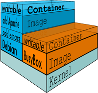

Microservices in Docks
Michał Borek and Jan Rotter
Agenda
- Microservice architecture (Michał)
- Eureka
- Fat Jar
- Docker introduction (Janek)
- Docker networking
- Gradle plugin
- Real-life example
- What went wrong?
- Nanoservices
- Win vs Lin
- Open issues
- JVM Memory Hog
Microservices
Monolithic vs. Microservices

REST as an interface
Domain Driven Design (enforced)
Netflix Eureka
(micro)service discovery
Fat jar

What is it?
Docker
Lightweight virtualization


Docker
Ready to run applications or services
$ docker run -p 8080:8080 -v /var/jenkins_home jenkins
Docker Hub
Docker
Filesystem layers
Docker
Container isolation
Dockerfile
FROM php:5.6-apache
RUN a2enmod rewrite
# install the PHP extensions we need
RUN apt-get update && apt-get install -y libpng12-dev libjpeg-dev && rm -rf /var/lib/apt/lists/* \
&& docker-php-ext-configure gd --with-png-dir=/usr --with-jpeg-dir=/usr \
&& docker-php-ext-install gd
RUN docker-php-ext-install mysqli
VOLUME /var/www/html
ENV WORDPRESS_VERSION 4.3.1
ENV WORDPRESS_SHA1 b2e5652a6d2333cabe7b37459362a3e5b8b66221
# upstream tarballs include ./wordpress/ so this gives us /usr/src/wordpress
RUN curl -o wordpress.tar.gz -SL https://wordpress.org/wordpress-${WORDPRESS_VERSION}.tar.gz \
&& echo "$WORDPRESS_SHA1 *wordpress.tar.gz" | sha1sum -c - \
&& tar -xzf wordpress.tar.gz -C /usr/src/ \
&& rm wordpress.tar.gz \
&& chown -R www-data:www-data /usr/src/wordpress
COPY docker-entrypoint.sh /entrypoint.sh
# grr, ENTRYPOINT resets CMD now
ENTRYPOINT ["/entrypoint.sh"]
CMD ["apache2-foreground"]
Docker networking
Separate containers, separate ip's
gradle microservices plugin
Linked services
Dockerfile generation
dockerfile {
from ubuntu:14.04
expose 8080
volume '/var/volume'
user 'deamon'
add 'some.jar', 'test.jar'
cmd java "java -jar test.jar"
}
Microservice template
dockerfile {
template microserviceTemplate
env 'name', 'value'
...
}Bind mounts
Real life example
What went wrong?
Nanoservices
Windows and Linux support


boot2docker-automounter
boot2docker-automounterCredits
- Docker, Inc. - Docker, Docker Hub, images
- Martin Fowler - microservices architecture description, images
- Reveal.js - this presentation
- campeauscollectables at etsy.com - Fat Jar image
- Netflix, Inc. - Eureka and others
- https://www.jasondavies.com/wordcloud